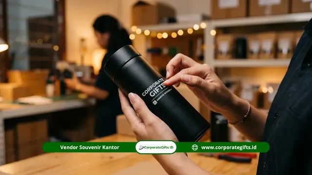

Corporate Gifts ID - Cara pesan souvenir mitra kampus yang tepat adalah menyiapkan file logo vektor kedua institusi, mengirim brief ke vendor, menyetujui mockup, membayar uang muka (DP) umumnya 50%, memantau produksi, memeriksa sampel, lalu melunasi dan menerima pengiriman. Seluruh proses memakan waktu sekitar 11 hingga 33 hari kerja, sehingga pemesanan idealnya dilakukan minimal 4 minggu sebelum acara penandatanganan MoU atau kerja sama resmi.
Poin Kunci Pemesanan Souvenir Mitra Kampus:
- Perencanaan Waktu: Pengadaan souvenir institusi membutuhkan tenggat waktu minimal 4 minggu sebelum acara serah terima berlangsung.
- Kesiapan Aset Vektor: Berkas logo institusi dalam format vektor beresolusi tinggi (AI/EPS/SVG) merupakan syarat utama demi cetakan presisi.
- Verifikasi Mockup: Persetujuan desain digital (mockup) adalah gerbang kontrol mutu terpenting sebelum mesin produksi massal bekerja.
- Jaminan Garansi: Pastikan bermitra dengan vendor kredibel yang menyediakan sampel nyata, invoice resmi, dan garansi pergantian produk cacat.
- Koordinasi Sinergis: Komunikasi transparan antara tim logistik kampus dan vendor menjaga barang tiba tepat waktu tanpa friksi.
Pemesanan souvenir mitra kampus yang berhasil bukan sekadar memilih item barang yang tampak bagus di brosur, melainkan perihal mengelola siklus pengadaan secara rapi, sistematis, dan terukur.
Kendala pengadaan cinderamata korporat atau universitas sering kali berakar dari persiapan administratif pemesan yang kurang matang di tahap awal, misalnya format logo yang pecah saat diperbesar atau estimasi jadwal produksi yang terlampau sempit. Panduan ini dirancang untuk mendampingi pejabat pengadaan dan humas kampus menghindari risiko tersebut. Untuk referensi kategori souvenir, Anda juga dapat membaca panduan Souvenir Mitra Kampus Negeri serta Souvenir Mitra Kampus Swasta.
Apa yang Perlu Disiapkan Sebelum Memesan Souvenir Mitra Kampus?
Sebelum menghubungi vendor untuk memesan souvenir mitra kampus, siapkan file logo beresolusi tinggi, tetapkan alokasi pagu anggaran dan kuantitas unit, serta pastikan tanggal acara seremonial telah dikunci agar tidak menimbulkan perubahan spesifikasi di tengah jalan.
Dokumen dan File Apa yang Harus Disiapkan?
Ketidaksesuaian warna atau ketajaman cetak souvenir sering kali bermula dari aset visual awal yang kurang memadai. Sebelum mengirimkan permintaan penawaran harga, pastikan tim Anda telah merangkum berkas berikut:
- File Logo Vektor: Format master seperti AI, EPS, SVG, atau PDF kurva untuk lambang universitas dan instansi mitra.
- Panduan Warna Institusi: Kode warna Pantone Matching System (PMS) atau kode warna HEX sesuai pedoman identitas visual resmi.
- Komposisi Tipografi: Teks tambahan yang ingin dibubuhkan, misalnya nama program, tanggal penandatanganan kerja sama, atau kutipan sambutan.
- Estimasi Volume Kuantitas: Perkiraan jumlah tamu delegasi kehormatan, pimpinan rektorat, dan staf pelaksana yang akan menerima souvenir.
- Jadwal Target Kedatangan: Tenggat waktu pasti barang harus sudah berada di lokasi acara (disarankan 2 - 3 hari sebelum seremonial).
Bagaimana Menentukan Anggaran yang Realistis?
Tetapkan batas anggaran per paket (cost per unit) dan plafon total sebelum melakukan kurasi merchandise. Hal ini mempermudah vendor menyaring rekomendasi produk yang tepat sasaran, misalnya gift set eksekutif berbahan kulit sintetis untuk pejabat tinggi atau paket seminar kit premium untuk seluruh rombongan delegasi.
Bagaimana Langkah-Langkah Memesan Souvenir Mitra Kampus?
Siklus pengadaan cinderamata institusi formal terbagi dalam tujuh langkah terstruktur mulai dari pemetaan vendor tepercaya hingga serah terima akhir:
- Riset dan penentuan shortlist vendor kredibel
- Konsultasi teknis dan penyampaian brief spesifikasi
- Persetujuan lembar desain visual (mockup approval)
- Penerbitan administrasi dan pembayaran uang muka (DP)
- Tahap produksi massal dan penyesuaian branding
- Pengecekan sampel batch produksi (quality control)
- Pelunasan pembayaran dan pengiriman ekspedisi terproteksi
Berikut adalah ulasan mendalam pada tiap tahapan yang dapat diterapkan oleh tim pengadaan kampus.
Langkah 1: Riset dan Shortlist Vendor
Cari minimal tiga kandidat penyedia merchandise yang memiliki rekam jejak menangani proyek instansi pemerintah, BUMN, atau perguruan tinggi. Evaluasi portofolio fisik, ketepatan waktu pengiriman dari testimoni sebelumnya, serta kesiapan vendor menerbitkan kelengkapan perpajakan seperti faktur pajak dan kuitansi bermeterai.
Langkah 2: Konsultasi dan Pengiriman Brief
Hubungi customer relation vendor melalui kanal resmi. Sampaikan lembar brief yang mencakup tipe barang yang diinginkan, jumlah unit, target tanggal pengiriman, dan teknik kustomisasi logo (misalnya laser engraving, sablon, digital UV, atau hot print emas). Semakin detail rincian awal, semakin presisi kalkulasi estimasi biaya yang diajukan vendor.

Verifikasi sampel fisik dan quality control memastikan hasil akhir souvenir mitra kampus sesuai standar branding institusi.
Langkah 3: Persetujuan Desain Mockup
Vendor profesional akan merancang gambar simulasi digital (mockup) dalam rentang 1 hingga 3 hari kerja. Periksa lembar mockup secara saksama: pastikan letak lambang kampus dan logo mitra seimbang, ukuran proporsional, kombinasi warna selaras, dan tidak ada saltik (typo) pada penulisan nama jabatan atau institusi. Lembar mockup yang disetujui akan menjadi acuan baku tim produksi pabrik.
Langkah 4: Pembayaran Uang Muka
Setelah rancangan desain dikonfirmasi, vendor akan menerbitkan proforma invoice. Pemesan umumnya diwajibkan menyetorkan uang muka sebesar 50% dari total nilai kontrak kerja sama sebagai tanda jadi dimulainya proses pengadaan bahan baku dan antrean mesin cetak.
Langkah 5: Proses Produksi
Durasi pengerjaan massal lazimnya membutuhkan waktu 7 hingga 21 hari kerja, bergantung pada tingkat kesulitan produk dan teknik finishing kemasan kotak kaku (hardbox). Selama periode ini, vendor berstandar tinggi akan mengirimkan update berkala disertai dokumentasi foto progres kerja.
Langkah 6: Pengecekan Sampel Produksi
Khusus pemesanan dalam skala di atas 100 unit atau set merchandise bernilai tinggi, ajukan permohonan 1 unit sampel fisik (pre-production sample) dari lini produksi awal. Verifikasi langsung ketebalan bahan, hasil grafir laser, serta kerapian jahitan sebelum vendor melanjutkan pengerjaan seluruh sisa kuantitas pesanan.
Langkah 7: Pelunasan dan Pengiriman
Saat seluruh paket cinderamata selesai melewati proses kendali mutu (quality control) dan dipacking rapi, lakukan penyelesaian pelunasan sisa tagihan. Vendor selanjutnya mengurus dokumen surat jalan resmi, berita acara serah terima (BAST), serta mengoordinasikan ekspedisi kargo aman menuju alamat kampus yang ditentukan.
Berapa Lama Total Waktu Pemesanan Souvenir Mitra Kampus?
Secara umum, rentang total waktu sejak konsultasi konsep perdana sampai souvenir diterima di lokasi berada di kisaran 11 hingga 33 hari kerja, bergantung pada volume pesanan dan tingkat kerumitan kustomisasi kemasan.
Rincian alokasi estimasi waktu per tahapan:
- Konsultasi & Pengajuan Brief: 1 hingga 2 hari kerja
- Pembuatan & Revisi Mockup Desain: 2 hingga 5 hari kerja
- Produksi Massal & Quality Control: 7 hingga 21 hari kerja
- Ekspedisi & Distribusi Lapangan: 1 hingga 5 hari kerja (menyesuaikan wilayah kota tujuan)
Untuk memastikan kelancaran acara dan mengantisipasi potensi kendala cuaca atau logistik luar kota, jadwal pemesanan idealnya diproses paling lambat 4 minggu sebelum hari seremonial. Apabila kuantitas pesanan melebihi 500 unit dengan kustomisasi boks eksklusif, jadwalkan pemesanan 6 hingga 8 minggu di awal.
Tabel Estimasi Jadwal & Alur Pemesanan Souvenir Mitra Kampus
Berikut rangkuman timeline kerja standar pengadaan souvenir mitra kampus mulai dari konsultasi awal hingga serah terima barang:
| Tahapan Pengadaan | Estimasi Waktu | Aktivitas Utama | Output / Dokumen |
|---|---|---|---|
| 1. Riset & Konsultasi Brief | 1 - 2 Hari Kerja | Penyampaian kebutuhan produk, jumlah unit, anggaran, dan jadwal acara | Estimasi Penawaran Harga |
| 2. Desain & Approval Mockup | 2 - 5 Hari Kerja | Penyerahan logo vektor, penyesuaian tata letak (layout), dan approval digital | Lembar Persetujuan Mockup |
| 3. Administrasi & Uang Muka | 1 - 2 Hari Kerja | Penerbitan proforma invoice dan pembayaran uang muka (DP 50%) | Proforma Invoice & Kuitansi DP |
| 4. Produksi & Pengecekan Sampel | 7 - 21 Hari Kerja | Pencetakan branding massal serta verifikasi sampel fisik (batch produksi) | Sampel Fisik & Laporan Progres |
| 5. Pelunasan & Pengiriman | 1 - 5 Hari Kerja | Pelunasan sisa tagihan, packing ekspedisi aman, dan serah terima produk | Surat Jalan, BAST & Faktur Pajak |
Apa Kesalahan yang Harus Dihindari Saat Memesan?
Mencegah kekeliruan sejak tahap perencanaan jauh lebih hemat biaya dan waktu dibanding memperbaiki pesanan yang terlanjur salah cetak. Hindari beberapa kesalahan umum pengadaan berikut:
- Memesan Terlalu Mepet (Deadlines Rush): Jadwal yang terburu-buru meningkatkan risiko kelalaian finishing dan membatasi opsi metode branding yang rumit.
- Menyetujui Mockup Tanpa Cek Menyeluruh: Mengabaikan pengecekan ejaan nama gelar pimpinan, resolusi logo mitra, atau posisi lambang kampus dapat berakibat fatal pada seremonial formal.
- Melewatkan Sampel Fisik: Mempercayai warna layar monitor 100% tanpa memeriksa sampel fisik sering memicu kekecewaan karena spektrum warna RGB layar berbeda dari hasil cetak tinta fisik.
- Mengabaikan Klausul Garansi: Tidak memastikan adanya jaminan penggantian barang cacat dari pihak vendor membuat kampus merugi bila terjadi kerusakan di perjalanan pengiriman.
Kesimpulan Praktis
Memesan souvenir mitra kampus yang elegan dan berkesan menuntut kedisiplinan jadwal, kelengkapan berkas visual, dan kemitraan dengan vendor pengadaan berpengalaman. Dengan menjalankan alur tahapan di atas, proses pengadaan souvenir kerja sama universitas dapat berlangsung tertib, efisien, serta merefleksikan wibawa dan profesionalitas kedua belah pihak.
Untuk melihat beragam varian cenderamata kemitraan, kunjungi koleksi Souvenir Kantor dan Souvenir Custom VIP, atau jelajahi dokumen penawaran lengkap di halaman Katalog Resmi CorporateGifts.ID.
Disclaimer: Estimasi durasi pengerjaan, skema pembayaran, dan ketentuan pemesanan di atas merupakan panduan operasional standar B2B CorporateGifts.ID. Kebijakan dapat disesuaikan menurut kompleksitas spesifikasi produk, ketersediaan bahan impor, serta kesepakatan kontrak kerja sama resmi.